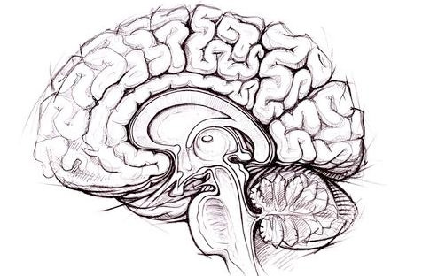

Tegan Sharp

Summary
A registered psychologist and PhD student with an interest in working with children and adolescents.
Education
PhD Student, University of Newcastle, 2024 - Current
- Supervisor: Dr Oren Griffiths
- Research: Computerised neuropsychological science
4+2 Intership, Australian Health Practitioner Registry Agency (AHPRA)
- Supervisor: Kasha Bedford
- Focus: Assessment and intervention with young people
Bachelor of Psychological Science (Honours), University of New South Wales (UNSW)
Work Experience
Psychologist, XRHealth
- Utilised cutting-edge VR technology from treatment of diverse individuals
Skills
- Web-development
- Intervention (CBT, ACT, DBT)